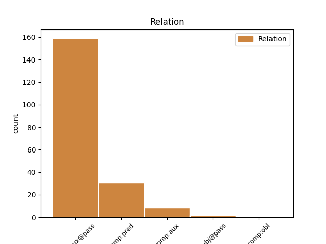
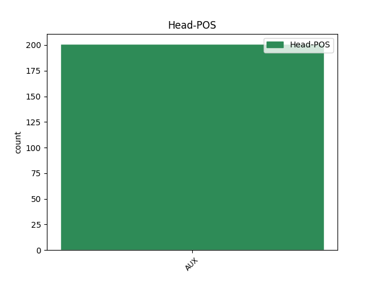
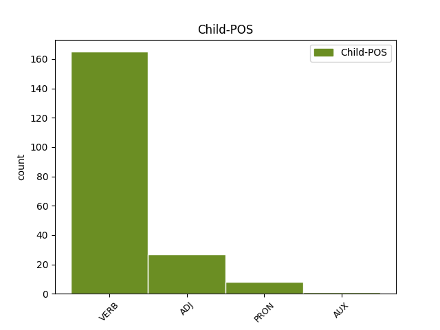

Distribution of features within this leaf



Agreement Rules sorted by frequency.
When the head token is AUX and the dependent token is VERB.
1 Con _ _ _ _ 0 _ _ _
2 miras _ _ _ _ 0 _ _ _
3 a _ _ _ _ 0 _ _ _
4 minimizar _ _ _ _ 0 _ _ _
5 cualquier _ _ _ _ 0 _ _ _
6 confusión _ _ _ _ 0 _ _ _
7 con _ _ _ _ 0 _ _ _
8 una _ _ _ _ 0 _ _ _
9 religión _ _ _ _ 0 _ _ _
10 , _ _ _ _ 0 _ _ _
11 el _ _ _ _ 0 _ _ _
12 uso _ _ _ _ 0 _ _ _
13 de _ _ _ _ 0 _ _ _
14 la _ _ _ _ 0 _ _ _
15 palabra _ _ _ _ 0 _ _ _
16 " _ _ _ _ 0 _ _ _
17 templo _ _ _ _ 0 _ _ _
18 " _ _ _ _ 0 _ _ _
19 para _ _ _ _ 0 _ _ _
20 describir _ _ _ _ 0 _ _ _
21 los _ _ _ _ 0 _ _ _
22 inmuebles _ _ _ _ 0 _ _ _
23 de _ _ _ _ 0 _ _ _
24 los _ _ _ _ 0 _ _ _
25 Shriners _ _ _ _ 0 _ _ _
26 ha _ _ _ _ 0 _ _ _
27 sido ser AUX _ Gender=Masc|Number=Sing|Tense=Past|VerbForm=Part 0 _ _ _
28 reemplazado reemplazar VERB _ Gender=Masc|Number=Sing|Tense=Past|VerbForm=Part 27 comp:aux@pass _ _
29 por _ _ _ _ 0 _ _ _
30 la _ _ _ _ 0 _ _ _
31 frase _ _ _ _ 0 _ _ _
32 " _ _ _ _ 0 _ _ _
33 Centro _ _ _ _ 0 _ _ _
34 Shriner _ _ _ _ 0 _ _ _
35 " _ _ _ _ 0 _ _ _
36 , _ _ _ _ 0 _ _ _
37 aunque _ _ _ _ 0 _ _ _
38 en _ _ _ _ 0 _ _ _
39 capítulos _ _ _ _ 0 _ _ _
40 individuales _ _ _ _ 0 _ _ _
41 siguen _ _ _ _ 0 _ _ _
42 siendo _ _ _ _ 0 _ _ _
43 nombrados _ _ _ _ 0 _ _ _
44 como _ _ _ _ 0 _ _ _
45 " _ _ _ _ 0 _ _ _
46 templos _ _ _ _ 0 _ _ _
47 " _ _ _ _ 0 _ _ _
48 . _ _ _ _ 0 _ _ _
When the head token is AUX and the dependent token is ADJ.
1 Este _ _ _ _ 0 _ _ _
2 año _ _ _ _ 0 _ _ _
3 ha _ _ _ _ 0 _ _ _
4 sido ser AUX _ Gender=Masc|Number=Sing|Tense=Past|VerbForm=Part 0 _ _ _
5 maravilloso maravilloso ADJ _ Gender=Masc|Number=Sing 4 comp:pred _ SpaceAfter=No
6 , _ _ _ _ 0 _ _ _
7 he _ _ _ _ 0 _ _ _
8 participado _ _ _ _ 0 _ _ _
9 mucho _ _ _ _ 0 _ _ _
10 , _ _ _ _ 0 _ _ _
11 nadie _ _ _ _ 0 _ _ _
12 podía _ _ _ _ 0 _ _ _
13 esperar _ _ _ _ 0 _ _ _
14 algo _ _ _ _ 0 _ _ _
15 así _ _ _ _ 0 _ _ _
16 " _ _ _ _ 0 _ _ _
17 , _ _ _ _ 0 _ _ _
18 comentó _ _ _ _ 0 _ _ _
19 en _ _ _ _ 0 _ _ _
20 una _ _ _ _ 0 _ _ _
21 entrevista _ _ _ _ 0 _ _ _
22 a _ _ _ _ 0 _ _ _
23 UEFA.com _ _ _ _ 0 _ _ _
24 . _ _ _ _ 0 _ _ _
When the head token is AUX and the dependent token is PRON.
1 Soy _ _ _ _ 0 _ _ _
2 Andaluz _ _ _ _ 0 _ _ _
3 enamorado _ _ _ _ 0 _ _ _
4 de _ _ _ _ 0 _ _ _
5 el _ _ _ _ 0 _ _ _
6 norte _ _ _ _ 0 _ _ _
7 de _ _ _ _ 0 _ _ _
8 España _ _ _ _ 0 _ _ _
9 y _ _ _ _ 0 _ _ _
10 puedo _ _ _ _ 0 _ _ _
11 decir _ _ _ _ 0 _ _ _
12 que _ _ _ _ 0 _ _ _
13 ha _ _ _ _ 0 _ _ _
14 sido ser AUX _ Gender=Masc|Number=Sing|Tense=Past|VerbForm=Part 0 _ _ _
15 unos uno PRON _ Gender=Masc|Number=Plur|PronType=Ind 14 comp:pred _ _
16 de _ _ _ _ 0 _ _ _
17 los _ _ _ _ 0 _ _ _
18 lugares _ _ _ _ 0 _ _ _
19 que _ _ _ _ 0 _ _ _
20 mejor _ _ _ _ 0 _ _ _
21 hemos _ _ _ _ 0 _ _ _
22 comido _ _ _ _ 0 _ _ _
23 nunca _ _ _ _ 0 _ _ _
24 . _ _ _ _ 0 _ _ _
When the head token is AUX and the dependent token is AUX.
1 Vuestra _ _ _ _ 0 _ _ _
2 carrera _ _ _ _ 0 _ _ _
3 ha _ _ _ _ 0 _ _ _
4 sido _ _ _ _ 0 _ _ _
5 escalonada _ _ _ _ 0 _ _ _
6 , _ _ _ _ 0 _ _ _
7 habéis haber AUX _ Gender=Masc|VerbForm=Fin 0 _ _ _
8 ido ir AUX _ Gender=Masc|Number=Sing|VerbForm=Part 7 comp:aux _ _
9 subiendo _ _ _ _ 0 _ _ _
10 escalón _ _ _ _ 0 _ _ _
11 a _ _ _ _ 0 _ _ _
12 escalón _ _ _ _ 0 _ _ _
13 , _ _ _ _ 0 _ _ _
14 siempre _ _ _ _ 0 _ _ _
15 subiendo _ _ _ _ 0 _ _ _
16 . _ _ _ _ 0 _ _ _
Disagree Examples:
1 Lo _ _ _ _ 0 _ _ _
2 que _ _ _ _ 0 _ _ _
3 esta estar AUX _ Gender=Fem|Number=Sing|VerbForm=Fin 0 _ _ _
4 claro claro ADJ _ Gender=Masc|Number=Sing 3 comp:pred _ _
5 que _ _ _ _ 0 _ _ _
6 , _ _ _ _ 0 _ _ _
7 si _ _ _ _ 0 _ _ _
8 sigue _ _ _ _ 0 _ _ _
9 así _ _ _ _ 0 _ _ _
10 , _ _ _ _ 0 _ _ _
11 el _ _ _ _ 0 _ _ _
12 míster _ _ _ _ 0 _ _ _
13 no _ _ _ _ 0 _ _ _
14 será _ _ _ _ 0 _ _ _
15 bien _ _ _ _ 0 _ _ _
16 recibido _ _ _ _ 0 _ _ _
17 en _ _ _ _ 0 _ _ _
18 ningún _ _ _ _ 0 _ _ _
19 estadio _ _ _ _ 0 _ _ _
20 . _ _ _ _ 0 _ _ _
1 Las _ _ _ _ 0 _ _ _
2 labores _ _ _ _ 0 _ _ _
3 de _ _ _ _ 0 _ _ _
4 construcción _ _ _ _ 0 _ _ _
5 han _ _ _ _ 0 _ _ _
6 sido ser AUX _ Gender=Masc|Number=Sing|Tense=Past|VerbForm=Part 0 _ _ _
7 gestionadas gestionado VERB _ Gender=Fem|Number=Plur|Tense=Past|VerbForm=Part 6 comp:aux@pass _ _
8 por _ _ _ _ 0 _ _ _
9 la _ _ _ _ 0 _ _ _
10 empresa _ _ _ _ 0 _ _ _
11 de _ _ _ _ 0 _ _ _
12 construcción _ _ _ _ 0 _ _ _
13 segoviana _ _ _ _ 0 _ _ _
14 Maratón _ _ _ _ 0 _ _ _
15 Segovia _ _ _ _ 0 _ _ _
16 . _ _ _ _ 0 _ _ _
1 Pero _ _ _ _ 0 _ _ _
2 que _ _ _ _ 0 _ _ _
3 no _ _ _ _ 0 _ _ _
4 se _ _ _ _ 0 _ _ _
5 nos _ _ _ _ 0 _ _ _
6 pase _ _ _ _ 0 _ _ _
7 la _ _ _ _ 0 _ _ _
8 jugada _ _ _ _ 0 _ _ _
9 maestra _ _ _ _ 0 _ _ _
10 realizada _ _ _ _ 0 _ _ _
11 por _ _ _ _ 0 _ _ _
12 la _ _ _ _ 0 _ _ _
13 alcaldesa _ _ _ _ 0 _ _ _
14 , _ _ _ _ 0 _ _ _
15 presidenta _ _ _ _ 0 _ _ _
16 de _ _ _ _ 0 _ _ _
17 el _ _ _ _ 0 _ _ _
18 Pleno _ _ _ _ 0 _ _ _
19 , _ _ _ _ 0 _ _ _
20 dejando _ _ _ _ 0 _ _ _
21 la _ _ _ _ 0 _ _ _
22 moción _ _ _ _ 0 _ _ _
23 sobre _ _ _ _ 0 _ _ _
24 la _ _ _ _ 0 _ _ _
25 mesa _ _ _ _ 0 _ _ _
26 a _ _ _ _ 0 _ _ _
27 pesar _ _ _ _ 0 _ _ _
28 de _ _ _ _ 0 _ _ _
29 haber _ _ _ _ 0 _ _ _
30 sido ser AUX _ Gender=Masc|Number=Sing|Tense=Past|VerbForm=Part 0 _ _ _
31 aprobada aprobar VERB _ Gender=Fem|Number=Sing|Tense=Past|VerbForm=Part 30 comp:aux@pass _ _
32 la _ _ _ _ 0 _ _ _
33 urgencia _ _ _ _ 0 _ _ _
34 . _ _ _ _ 0 _ _ _
1 Mi _ _ _ _ 0 _ _ _
2 hijo _ _ _ _ 0 _ _ _
3 esta estar AUX _ Gender=Fem|Number=Sing|VerbForm=Fin 0 _ _ _
4 tan _ _ _ _ 0 _ _ _
5 contento contento ADJ _ Gender=Masc|Number=Sing 3 comp:pred _ _
6 que _ _ _ _ 0 _ _ _
7 no _ _ _ _ 0 _ _ _
8 quiere _ _ _ _ 0 _ _ _
9 venir _ _ _ _ 0 _ _ _
10 se _ _ _ _ 0 _ _ _
11 a _ _ _ _ 0 _ _ _
12 casa _ _ _ _ 0 _ _ _
13 . _ _ _ _ 0 _ _ _
1 Una _ _ _ _ 0 _ _ _
2 de _ _ _ _ 0 _ _ _
3 las _ _ _ _ 0 _ _ _
4 vías _ _ _ _ 0 _ _ _
5 de _ _ _ _ 0 _ _ _
6 la _ _ _ _ 0 _ _ _
7 línea _ _ _ _ 0 _ _ _
8 de _ _ _ _ 0 _ _ _
9 la _ _ _ _ 0 _ _ _
10 LNER _ _ _ _ 0 _ _ _
11 había _ _ _ _ 0 _ _ _
12 sido ser AUX _ Gender=Masc|Number=Sing|Tense=Past|VerbForm=Part 0 _ _ _
13 electrificada electrificar VERB _ Gender=Fem|Number=Sing|Tense=Past|VerbForm=Part 12 comp:aux@pass _ _
14 en _ _ _ _ 0 _ _ _
15 1941 _ _ _ _ 0 _ _ _
16 hasta _ _ _ _ 0 _ _ _
17 Mill _ _ _ _ 0 _ _ _
18 Hill _ _ _ _ 0 _ _ _
19 East _ _ _ _ 0 _ _ _
20 para _ _ _ _ 0 _ _ _
21 poder _ _ _ _ 0 _ _ _
22 servir _ _ _ _ 0 _ _ _
23 a _ _ _ _ 0 _ _ _
24 los _ _ _ _ 0 _ _ _
25 barracones _ _ _ _ 0 _ _ _
26 situados _ _ _ _ 0 _ _ _
27 en _ _ _ _ 0 _ _ _
28 ese _ _ _ _ 0 _ _ _
29 punto _ _ _ _ 0 _ _ _
30 . _ _ _ _ 0 _ _ _